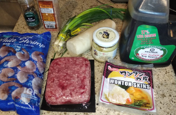
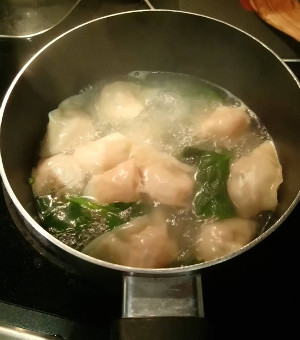
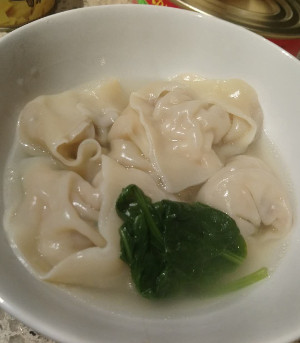
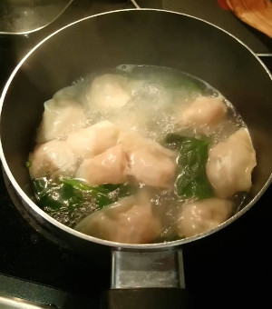
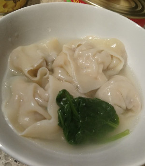

Wonton Soup

 



Ingredients: * Wonton skins, beef, shrimp, radish, ginger, green onions, soy sauce, salt, pepper
How to make it: * Chop everything into a large bowl, stuff inside the wanton skins (use water on the edges to tie everything) * Boil water (or chicken broth) with whatever vegetables you want (spinach, mushrooms, etc) and add wantons for a few minutes